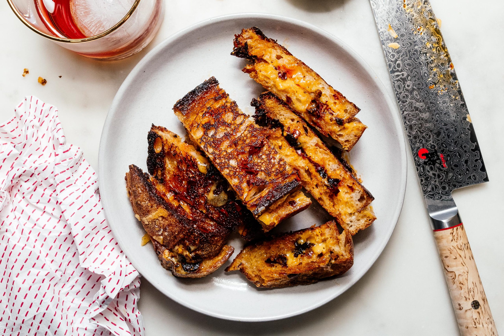

Spicy Chili Crisp Grilled Cheese

Description
A yummy, spicy, and savory grilled cheese recipe.
Use a homemade chili oil recipe or buy one in the store!
Ingredients
- Bread (sliced)
- Shredded cheddar (or any kind of cheese)
- Chili crisp
- Butter
Cooking Directions
- Place the two slices of bread (open faced) on a cutting board. Top the bottom slice of bread with shredded cheddar and dot generously with chili crisp, or to taste.
- Melt half a tablespoon of butter in a non-stick pan on medium low heat. Carefully add the cheese topped bread and top with the other slice of bread.
- Cook slowly on medium-low heat until golden brown and toasty. If your cheese isn’t melting as fast as you like, use a lid to cover your sandwich but keep an eye on the bottom, checking every so often so that the bottom doesn't burn.
- When it’s golden and toasty, carefully flip your sandwich and continue grilling. The second-side grills a bit faster, so turn the heat down to low and keep a close eye on it. When perfect, remove from the pan, slice (or not) and enjoy hot!